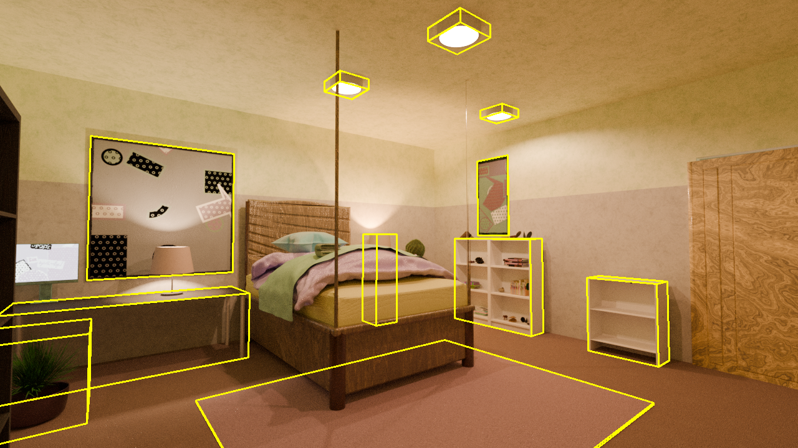
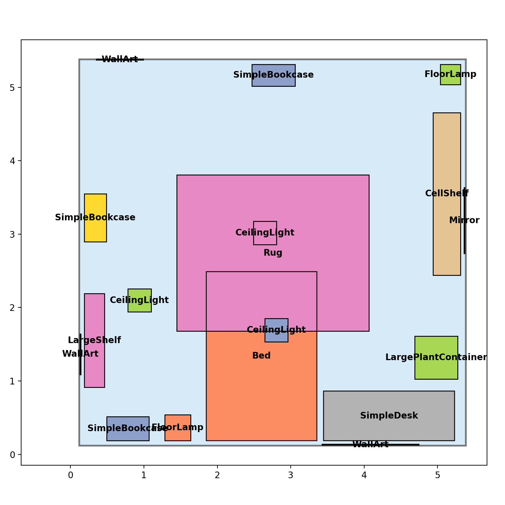

Using LychSim with Infinigen#
This section covers how to use LychSim with Infinigen, a tool for generating synthetic indoor scenes.
Generating Infinigen Scenes#
Please follow the instructions in Infinigen to generate synthetic indoor scenes. Note that opengl_gt.gin should be used to generate ground truth data, such as object locations and orientations that are necessary to reconstruct a scene in LychSim. As an example,
python -m infinigen.datagen.manage_jobs \
--output_folder outputs/infinigen_scenes --num_scenes 1 \
--pipeline_configs local_256GB.gin monocular.gin opengl_gt.gin indoor_background_configs.gin \
--configs fast_solve.gin singleroom.gin \
--pipeline_overrides get_cmd.driver_script='infinigen_examples.generate_indoors' manage_datagen_jobs.num_concurrent=16 \
--overrides compose_indoors.restrict_single_supported_roomtype=True compose_indoors.terrain_enabled=False
Loading an Infinigen Scene#
An Infinigen scene can be loaded into LychSim-compatible format using lychsim.tools.infinigen.load_infinigen_scene for scene data and lychsim.tools.infinigen.load_infinigen_frame for both scene and frame data. For example,
from lychsim.tools.infinigen import load_infinigen_scene
scene_path = '/path/to/infinigen/outputs/infinigen_scenes/231233f7'
# lychsim.core.scene.InfinigenScene
infinigen_scene = load_infinigen_scene(scene_path)
from lychsim.tools.infinigen import load_infinigen_frame
scene_path = '/path/to/infinigen/outputs/infinigen_scenes/231233f7'
# lychsim.tools.infinigen.InfinigenFrameOutput
infinigen_frame: InfinigenFrameOutput = load_infinigen_frame(
scene_path, camera_index=0, frame_index=48)
The frame_index parameter can be skipped so the script will automatically load the first available frame.
SemanticScene I/O#
After loading scenes into lychsim.core.SemanticScene, they can be saved and loaded as NumPy archive file easily.
np.savez(save_path, data=infinigen_frame.scene.to_dict())
scene_loaded = SemanticScene.from_npz(save_path)
assert infinigen_frame.scene == scene_loaded, \
"Loaded scene does not match the original scene."
Scenes can also be printed and checked for correctness.
print(infinigen_frame.scene)
Example output:
SemanticScene(
name=default_scene,
uid=None,
levels=[
SemanticLevel(
name=level_0,
uid=None,
regions=[
SemanticRegion(
name=bedroom_0/0,
uid=None,
polygon=...,
obb=...,
objects=[
Object(name=FloorLampFactory(7020734).spawn_asset(2459297), uid=1_0_0_0)
(omitted)
See full script in example_scripts/infinigen/load_and_save_scene.py.
Visualizing an Infinigen Frame#
In this section, we show how to visualize object oriented bounding boxes (OBB) on an Infinigen frame.
First we obtain camera extrinsics and intrinsics.
import numpy as np
camera_pose_inv = np.linalg.inv(infinigen_frame.camera_pose)
K = infinigen_frame.K
Prepare a canvas for visualization.
from lychsim.utils import rgbd2rgb
orig_image = rgbd2rgb(infinigen_frame.image)
plot_image = orig_image.copy()
Visualize object OBBs.
for obj in infinigen_frame.scene.get_all_objects():
if not infinigen_frame.visibility[obj.uid]:
continue
if obj.obb is None:
continue
plot_obb(plot_image, obj)

See full script in example_scripts/infinigen/visualize_infinigen_bbox3d.py.
Visualizing a Scene Layout#
In this section, we show how to visualize a bird’s eye view layout of an Infinigen scene.
We start by creating an empty canvas.
import matplotlib.pyplot as plt
fig, ax = plt.subplots(figsize=(8, 8))
We first visualize the floor of the room.
from matplotlib.patches import Polygon
floor_coords = np.array(region.polygon.exterior.coords[:])
floor_coords = np.concatenate([
floor_coords, np.zeros((floor_coords.shape[0], 1))], axis=1)
floor_coords = (
region.obb.rotation @ floor_coords.T
).T + region.obb.translation
ax.add_patch(Polygon(
floor_coords[:, :2], facecolor='#AED6F1',
edgecolor='black', alpha=0.5, linewidth=2))
Then we sort the objects in the room so we visualize them from lower to higher.
plot_objects = []
for obj in region.objects:
corners = obj.obb.corners[:4]
plot_objects.append((
obj.name.split('Factory')[0],
corners[:, :2].tolist(),
np.mean(corners[:, :2], axis=0),
float(corners[0, 2])))
plot_objects.sort(key=lambda x: x[3])
Lastly we draw 2D-view of objects’ oriented bounding boxes (OBB) on the canvas.
for idx, obj in enumerate(plot_objects):
ax.add_patch(Polygon(
obj[1], facecolor=object_colors[idx % len(object_colors)]))
for idx, obj in enumerate(plot_objects):
ax.add_patch(Polygon(
obj[1], facecolor='none', edgecolor='black'))
for idx, obj in enumerate(plot_objects):
x, y = obj[2]
ax.text(
x, y, obj[0], ha='center', va='center',
fontsize=10, weight='bold')

See full script in example_scripts/infinigen/visualize_infinigen_regions.py.